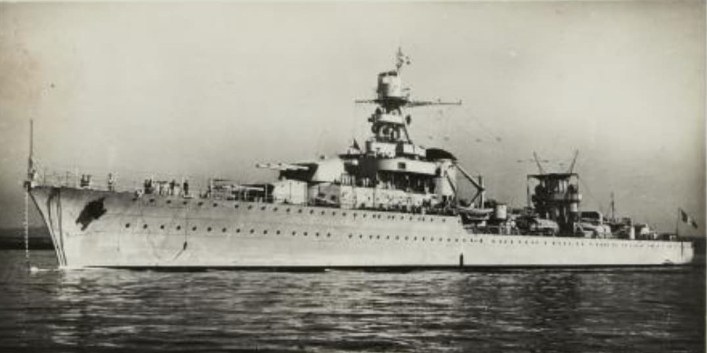
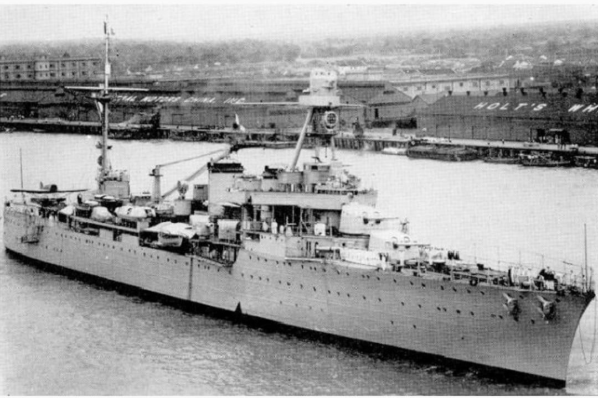
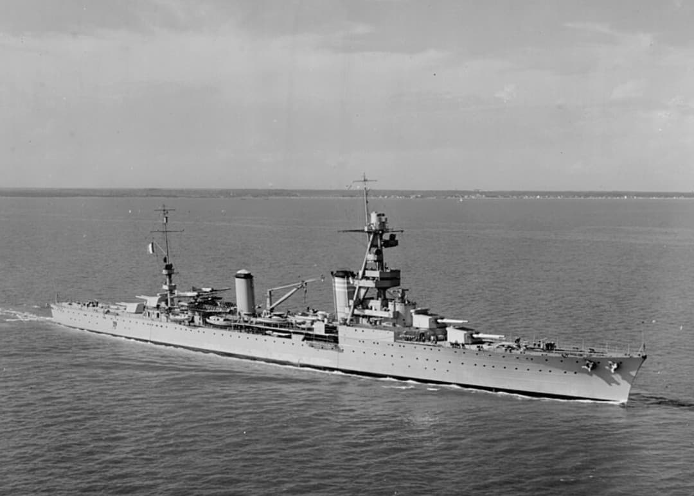

Introduction
Cette fiche présente l’ensemble des croiseurs français en service au début de la Seconde Guerre mondiale. Les informations ci‑dessous sont exposées dans un cadre strictement historique et documentaire, conforme aux exigences muséales de neutralité et de contextualisation.
En 1939, la Marine nationale dispose d’une flotte de croiseurs particulièrement moderne : silhouettes profilées, artillerie efficace, vitesse élevée et excellentes qualités nautiques. Ces navires jouent un rôle essentiel dans la doctrine française : escorte des cuirassés, reconnaissance, protection des convois, opérations en Méditerranée et engagements aux côtés des Forces navales françaises libres.
Présentation générale
En 1939, la Marine nationale aligne une flotte de 13 croiseurs, parmi les plus modernes d’Europe. Rapides, bien armés et dotés d’une excellente tenue à la mer, ils assurent des missions variées : escorte des cuirassés, reconnaissance, bombardement côtier, protection des convois et opérations au sein des Forces navales françaises libres (FNFL).
Ces croiseurs se répartissent en quatre grandes catégories : les croiseurs légers modernes, les croiseurs légers spécialisés, les croiseurs légers rapides, et les croiseurs lourds.

Croiseurs légers modernes
Navires : Georges Leygues — Gloire — Montcalm — Marseillaise — Jean de Vienne — La Galissonnière
- Années : 1935–1937
- Déplacement : ~7 600 t
- Armement : 9 × 152 mm
- Vitesse : 31 nœuds
- Particularité : les croiseurs français les plus modernes et équilibrés

Croiseurs légers spécialisés
Navires : Émile Bertin — Jeanne d’Arc
- Années : 1930–1933
- Déplacement : ~6 000 t
- Armement : 9 × 152 mm (Émile Bertin)
- Vitesse : 34 nœuds
- Particularité : missions spécialisées (minage rapide, croiseur‑école)

Croiseurs légers rapides
Navires : Duguay‑Trouin — Lamotte‑Picquet — Primauguet
- Années : 1923–1927
- Déplacement : ~7 000 t
- Armement : 8 × 155 mm
- Vitesse : 33 nœuds
- Particularité : première génération de croiseurs modernes français

Croiseurs lourds
Navires : Suffren — Colbert
- Années : 1927–1931
- Déplacement : ~10 000 t
- Armement : 8 × 203 mm
- Vitesse : 31 nœuds
- Particularité : les seuls croiseurs lourds français en service en 1939
Page du Musée HOP WW2 – Section navires français